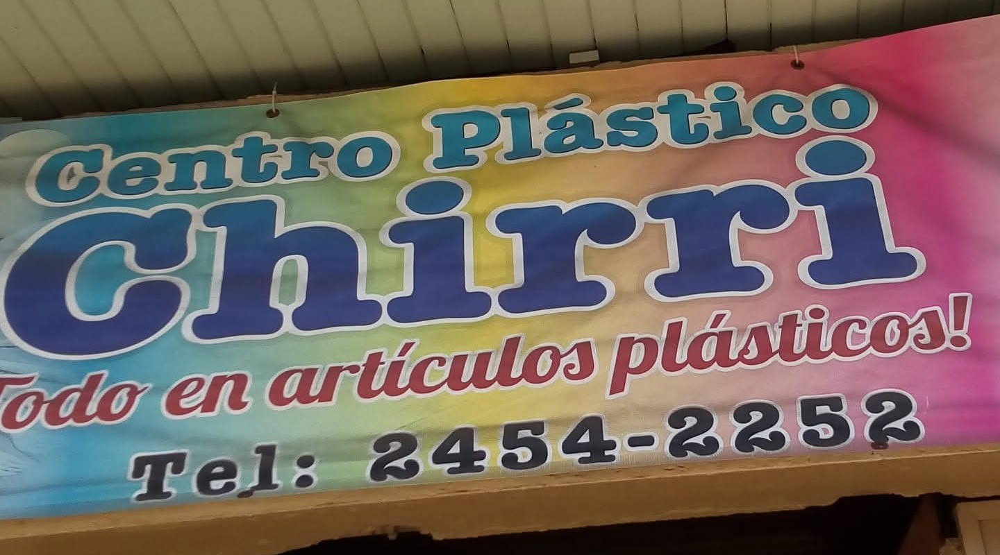
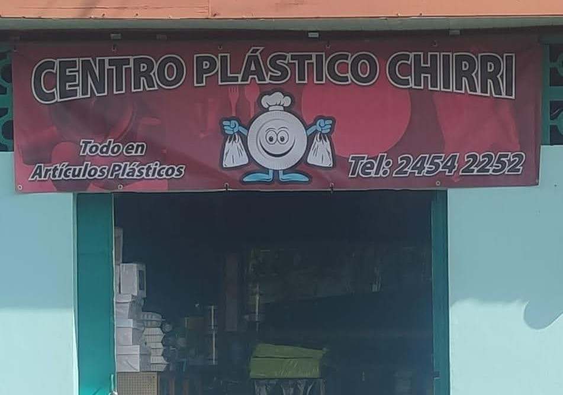

Un Poco de Nuestra Historia
En 1992, Don Rodolfo y Doña Ester dan con la idea de realizar una distribuidora de bolsas plásticas, en donde inicialmente su negocio lo implementan desde su hogar en donde sus hijos forman parte de algunas tareas durante sus ratos libres.
Ver más
Inicialmente Don Rodolfo y Doña Ester elaboraban las bolsas de forma manual en donde gracias al ingenio de Don Rodolfo logran crear su primer selladora de plástico, la cual se convirtió en una de las herramientas más importantes dentro de su taller, a lo que gracias a sus primeras ventas logran comprar una selladora nueva.
En sus inicios comentan que se dedicaban a vender mayormente en las ferias del agricultor en lugares como Sarchí, Grecia y Alajuela, en donde montaban un pequeño puesto donde lograban realizar las ventas de los artículos y de igual forma abastecían a los colaboradores de la feria, además de realizar ventas a productores locales de productos como el tomate, los cuales realizaban compras de plástico por metro.
Gracias a la gran cantidad de pedidos y el crecimiento de sus negocio a los 3 años de su inicio se piensa en la idea de un local físico en el centro de Sarchí, idea que se logra implementar gracias a Dios, en donde empiezan a distribuir productos plásticos nuevos, gracias a necesidades dentro de la comunidad se implementa la venta de artículos de fiesta y materiales como platos, vasos y cubiertos desechables. De igual forma nace la implementación de empaques plásticos, esto con el fin de logra abastecer a locales de comida en la comunidad, además de la venta a ferias y fiestas patronales.
Doña Ester comenta que tanto ella como su esposo Rodolfo y su familia se sienten sumamente agradecidos con Dios por brindarles la bendición de su negocio, además del agradecimiento a sus clientes y la comunidad por su confianza hacia ellos y por apoyarlos durante todos estos años además del agradecimiento a sus clientes dentro de cada una de las ferias del agricultor las cuales ellos visitaron durante tantos años y les ayudaron desde sus inicios.

